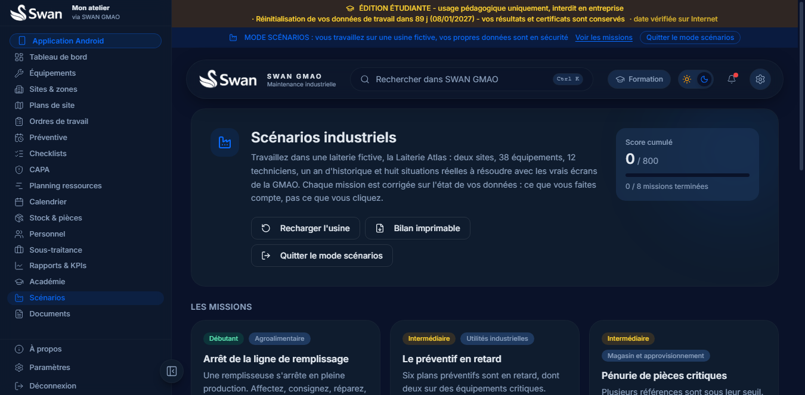

-
03.1 Équipements
Chaque machine a son dossier.
Catégorie, localisation, criticité, historique, pièces associées. Tout ce qui s'est passé sur un équipement se retrouve au même endroit.
-
03.2 Ordres de travail
Chaque panne devient un ordre.
Priorité, technicien, pièces consommées, heures passées. Le stock se met à jour et l'état de l'équipement suit l'intervention.
-
03.3 Planning
Chaque ordre trouve son créneau.
Un diagramme de Gantt par technicien, la charge de chacun, les conflits détectés, les absences et les jours fériés pris en compte.
-
03.4 Checklists
Chaque contrôle se remplit à l'écran.
OK, NOK, mesures comparées à leurs limites. Un point critique non conforme ouvre une action corrective, un point obligatoire sans réponse bloque la clôture.
-
03.5 Préventif
Chaque échéance se prépare.
Des plans périodiques par équipement, générés en ordres au bon moment, avec le suivi de ce qui est en retard.
-
03.6 Indicateurs
Chaque chiffre vient de ce que vous saisissez.
Disponibilité, MTBF, MTTR, stock en alerte, actions correctives. Rien n'est inventé : les indicateurs se calculent sur vos propres interventions.
01 Édition étudiante
Apprenez la maintenance sur le vrai logiciel.
SWAN GMAO Student est le logiciel de gestion de maintenance des services industriels, dans une édition gratuite pour les étudiants. Il fonctionne sur votre PC, sans Internet.
- 8modules de cours
- 78questions d'examen
- 90 jpar cycle de travail
- 0 DAlicence étudiante
02 Le principe
Ce n'est pas une simulation. C'est le logiciel qu'utilisent les services maintenance, réduit à ce dont un étudiant a besoin pour apprendre, pratiquer et prouver ce qu'il sait faire.
04 Académie intégrée
Du cours au certificat, sans quitter le logiciel.
Le parcours est inclus. Il ne demande aucune inscription supplémentaire et fonctionne hors ligne.
- 01
Huit modules
De la structure d'une GMAO à l'analyse des défaillances. Chaque module se termine par un quiz corrigé.
- 02
Exercices pratiques
Créez un équipement, traitez un ordre, planifiez une visite. Les actions sont vérifiées dans le logiciel lui-même.
- 03
Examen chronométré
Questions tirées au hasard, réponses mélangées, nombre de tentatives limité, correction à la fin.
- 04
Certificat de réussite
Une attestation numérotée à votre nom, à imprimer ou à enregistrer en PDF.
05 Scénarios industriels
Une usine fictive pour s'entraîner pour de bon.
Un interrupteur charge la Laiterie Atlas : 38 équipements, 12 techniciens, un an d'historique. Huit missions de métier à résoudre avec les vrais écrans. Quand vous le coupez, votre travail revient à l'identique.

Des données qui ressemblent à l'usine
Pannes qui se répètent, plans en retard, pièces sous leur seuil, techniciens absents : tout est généré avec ses liens.
Huit situations de métier
De l'arrêt d'une ligne de remplissage au pilotage du budget pièces, en passant par l'arrêt annuel et l'audit sécurité.
Corrigé sur ce que vous faites
Chaque objectif est lu dans les données : le bon technicien, la bonne checklist, le bon créneau. Deux indices par objectif.
Votre version normale reste intacte
Le mode met votre travail de côté en entier et le restitue tel quel en le quittant. Vos scores restent.
06 Fonctionnement
Trois étapes. Moins de cinq minutes.
- 1
Inscrivez-vous
Cinq champs, trente secondes. Cela nous permet de savoir dans quels établissements le logiciel est utilisé.
- 2
Téléchargez
Le fichier d'installation se télécharge directement, sans compte et sans redirection.
- 3
Installez et travaillez
Tout est dans le fichier : aucun autre logiciel à installer, aucune connexion nécessaire.
Un cycle de travail de 90 jours
Pour garder l'esprit d'un apprentissage, vos données de travail (équipements, ordres, stock, plans) sont remises à zéro tous les 90 jours. Votre compte, vos résultats et vos certificats sont conservés. La date est vérifiée sur Internet quand une connexion est disponible.
07 Téléchargement gratuit
Obtenez SWAN GMAO Student.
Remplissez le formulaire pour débloquer le téléchargement. Le fichier est un installateur unique, prêt à lancer.
- Version
- 1.0.0
- Fichier
- environ 90 Mo
- Système
- Windows 10 ou 11, 64 bits
- Disque
- environ 300 Mo
- Connexion
- Non requise pour travailler
- Licence
- Gratuite, usage pédagogique
Tout est contenu dans l'installateur : l'interface, le serveur local et la base de données. Aucun autre logiciel n'est nécessaire.
Vos informations
Tous les champs sont obligatoires.
OK Inscription enregistrée
Merci, votre téléchargement est prêt.
Le fichier s'enregistre directement sur votre ordinateur.
Télécharger pour WindowsSWAN-GMAO-Student-Setup-1.0.0.exe
Après le téléchargement
- Si votre navigateur dit que le fichier « n'est pas téléchargé couramment », ouvrez le menu du téléchargement et choisissez Conserver.
- Ouvrez le fichier. Windows peut afficher un écran bleu « Windows a protégé votre ordinateur » : cliquez sur le lien Informations complémentaires (sous le texte), puis sur le bouton Exécuter quand même.
- Suivez l'assistant, puis créez votre compte étudiant au premier lancement.
Je ne vois pas « Exécuter quand même », ou l'installation ne démarre pas
Cet avertissement apparaît pour tout programme récent qui n'a pas encore été téléchargé par beaucoup de personnes. Il ne signifie pas que le fichier est dangereux. Vous pouvez le vérifier avec l'empreinte SHA-256 ci-dessous. Deux autres façons de continuer :
- Débloquer le fichier : clic droit sur le fichier téléchargé, Propriétés, cochez Débloquer en bas de l'onglet Général, puis OK. Relancez ensuite le fichier.
- Avec PowerShell : ouvrez PowerShell dans le dossier Téléchargements et tapez
Unblock-File .\SWAN-GMAO-Student-Setup-1.0.0.exe, puis lancez le fichier.
Sur un ordinateur géré par un établissement, SmartScreen peut être verrouillé par l'administrateur : installez alors le logiciel sur votre ordinateur personnel.
Un problème ? Écrivez-nous : souanekhaledibnelwalid@gmail.com
07 Questions
Ce que les étudiants demandent.
Est-ce vraiment gratuit ?
Oui. L'édition étudiante est gratuite pour un usage pédagogique : cours, travaux pratiques, projets de fin d'études. Elle ne demande aucun paiement.
Faut-il une connexion Internet ?
Non, pas pour travailler. Le logiciel fonctionne entièrement sur votre PC. Une connexion occasionnelle lui permet seulement de vérifier la date pour le cycle de 90 jours.
Que se passe-t-il au bout de 90 jours ?
Vos données de travail (équipements, ordres, stock, plans) sont remises à zéro pour repartir sur un cycle neuf. Votre compte, vos résultats de cours et vos certificats sont conservés.
Windows affiche un avertissement au lancement, est-ce normal ?
Oui. Le fichier n'est pas encore signé par un certificat d'éditeur payant, donc SmartScreen demande une confirmation la première fois. Choisissez Informations complémentaires puis Exécuter quand même. Pour vérifier le fichier, comparez son empreinte SHA-256 avec celle affichée après l'inscription.
Mon antivirus bloque le fichier, que faire ?
Ajoutez le dossier d'installation à ses exclusions, ou autorisez le fichier, puis relancez l'installation. Le logiciel fonctionne uniquement en local et n'envoie aucune donnée.
Où sont enregistrées mes données ?
Sur votre ordinateur, dans votre profil Windows. Rien n'est envoyé vers un serveur. Gardez une copie de vos travaux importants.
Puis-je l'utiliser en entreprise ?
Non, l'édition étudiante est réservée à l'apprentissage. Une édition pour les entreprises et les universités existe : écrivez-nous pour la découvrir.
Et sur Mac, Linux ou téléphone ?
Pour l'instant, le logiciel étudiant fonctionne sous Windows 10 et 11 en 64 bits uniquement.